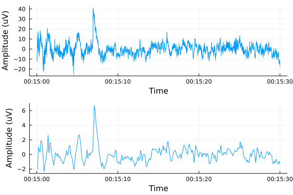
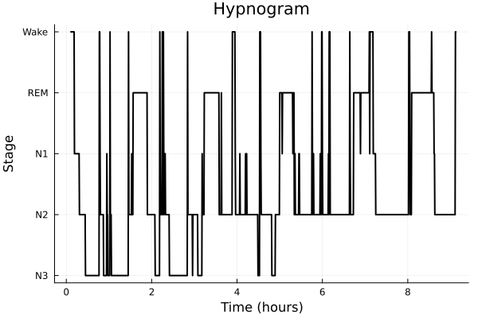

EEGToolkit.jl
Computational EEG analysis with emphasis in sleep neuroscience.
Developed at the Laboratory for the Study of Sleep Slow-wave activity
The Gods of the earth and sea
Sought thro' Nature to find this Tree,
But their search was all in vain:
There grows one in the Human Brain.— William Blake
This package has three aims:
- Simplicity
- Transparency
- Efficiency
Simplicity means that a person with only basic programming skills should be able to use it. Transparency means that any methodology implemented by the package should be accessible enough so as to be reported in a scientific paper. Efficiency means that large EEGs (e.g. sleep EEGs) should be processed and analyzed in seconds.
This package is free software—free as in freedom. You are free to use the code as you wish and for any purpose. You are free to study the code and change it to make it do what you wish. You are free to redistribute copies of this package to help others. You are free to distribute copies of any modified version of this package.
Proprietary software hinders the liberty of its users. In science, it obscures the scientific process, difficulting replication and collaboration. If you are a scientist, use free software whenever possible.
Package Features
- Loading and processing EEG data
- EEG visualization
- Resampling and filtering
- Masking and conditional analysis
- Sleep stage handling
- NREM Period detection
- Power spectral analysis
- Spindle detection algorithms
- Slow Wave detection
- Connectivity metrics (wPLI and coherence)
- Automated artifact detection
- Hypnograms
Time series
EEGToolkit.TimeSeries — Type
A struct representing time series data.
Fields
x::Vector{<:AbstractFloat}: Time series data.fs::Integer: Sampling rate.
EEGToolkit.segment — Function
segment(v::Vector{T}, L::Int; overlap::Union{<:AbstractFloat,Integer}=0, symmetric=false) where {T}
Splits a vector v into segments of length L with an overlap overlap expressed as a fraction of L. The overlap defaults to 0 (no overlap). Returns a vector $v$ of vectors - i.e. Vector{Vector{T}} - with $\vec{v_i}$ the $i$th segment in the split.
The function always attempts to capture the whole vector, even if the final split is not of length L. For example,
> x = [1, 2, 3, 4, 5, 6, 7, 8, 9, 0]
> segment(x, 5)
2-element Vector{Vector{Int64}}:
[1, 2, 3, 4, 5]
[6, 7, 8, 9, 0]
> segment(x, 7)
2-element Vector{Vector{Int64}}:
[1, 2, 3, 4, 5, 6, 7]
[8, 9, 0]Set symmetric=true to ensure that, if this occurs, the last split is dropped.
> segment(x, 3; symmetric=true)
3-element Vector{Vector{Int64}}:
[1, 2, 3]
[4, 5, 6]
[7, 8, 9]If L is equal to the segment length, segment raises a warning and returns a vector with only the original vector: [v]. The return value ensures type-safety but the warning is raised because splitting a vector over its length is potentially a programming mistake.
segment(ts::TimeSeries, L::Int; kargs...)
Wrapper to segment the vector ts.x in the time series ts.
EEGToolkit.epoch — Function
epoch(signal::TimeSeries, n::Integer; epoch_length::Integer=30)
Returns a vector [x₁, …, xₖ] with all values xᵢ corresponding to the nth epoch in the signal.
epoch(signal::TimeSeries, n::Integer, m::Integer)
Returns a vector [x₁, …, xₖ] with all indexes corresponding to epochs n, n+1, …, m of the EEG. The default sampling rate is used to compute the indexes.
EEGToolkit.plot_ts — Function
plot_ts(ts::TimeSeries, s::Integer, e::Integer; norm=false, ylab="Amplitude (uV)")
Plots TimeSeries from epoch s to epoch e. The series many be normalized.
plot_ts(ts::TimeSeries, s::Integer; kargs...)
Plots TimeSeries at epoch s.
plot_ts(ts::TimeSeries; norm=false, ylab="Amplitude (uV)")
Plots TimeSeries. The series may be normalized.
EEGToolkit.seconds_to_time — Function
seconds_to_time(seconds::Union{AbstractFloat, Integer})
Helper function: maps a time in seconds to a Time object.
EEG
The EEG struct is the core data structure of this package. It encapsulates the raw EEG data as a dictionary of String to TimeSeries objects. It also contains global and channel-specific masks for conditional analysis, in the form of dictionaries of Symbol to BitVector data. These information is hidden from the user and can only be accessed or manipulated through the provided API, ensuring data integrity and consistency.
EEGToolkit.EEG — Type
A struct for the EEG data type. An EEG is conceived as a collection of named time series with optional masks (named bit vectors) that can be applied to the time series for various purposes (e.g. artifact removal, sleep staging). Masks are either global (applicable to all channels) or channel-specific.
Fields
_signals::Dict{String, TimeSeries}: A dictionary mapping signal labels (strings) to arrays of floating-point values._global_masks::Dict{Symbol, BitVector}: A dictionary mapping symbols to bit vectors representing global masks (e.g. NREM masks)._channel_masks::Dict{String, Dict{Symbol, BitVector}}: A dictionary mapping channel names
to masks (dictionaries mapping symbols to bit vectors). These are channel-specific masks (e.g. artifact masks).
Constructors
EEG(file::String; id::String=""): Instantiates an EEG from an EDF file (file).
Example
eeg_data = EEG("path/to/edf_data/data.edf")EEGToolkit.get_channel — Function
getchannel(eeg::EEG, channelname::String)::TimeSeries
Returns the channel named channel_name from the eeg.
EEGToolkit.get_channels — Function
get_channels(eeg::EEG)::Dict{String, TimeSeries}
Returns the cannels in the eeg.
EEGToolkit.filter_channels — Function
filterchannels(eeg::EEG, filterfunction::Function)::Dict{String, TimeSeries}
Applies a filter_function to the dictionary which maps channel names to time series, and returns the filtered result.
Example: filter_channel(eeg, p -> startswith(first(p), "C")) would return only those EEG channels whose names begin with "C".
EEGToolkit.filter_channels! — Function
filterchannels!(eeg::EEG, filterfunction::Function)::Dict{String, TimeSeries}
Applies by reference a filter_function to the dictionary which maps channel names to time series.
Example: filter_channel(eeg, p -> startswith(first(p), "C")) would keep only those EEG channels whose names begin with "C".
EEGToolkit.remove_channel! — Function
remove_channel!(eeg::EEG, channel::String)
Removes a channel from the EEG.
remove_channel!(eeg::EEG, channels::Vector{String})
Removes a list of channels from the EEG.
EEGToolkit.plot_eeg — Function
plot_eeg(eeg::EEG, s::Integer, e::Integer; channels::Vector{String}=[""], spacing::AbstractFloat=1.5)
Plots EEG channels from epoch s to epoch e. Specific channels may be selected with the channels karg. The spacing argument is an added factor in the normalization of the EEG signals - the vertical distance between each signal in the plot grows proportionally to spacing.
Resampling
The package provides rational factor resampling to change the sampling rate of a TimeSeries. This is implemented via polyphase filtering (inserting zeros, low-pass filtering, and decimating) to avoid aliasing artifacts. It also provides wrappers around DSP functions for filtering raw signals as well as time series objects.
EEGToolkit.resample — Function
resample(signal::TimeSeries, new_fs::Float64)::TimeSeries
Resamples the input signal to the given new_fs, using rational factor resampling (L/M). Returns a new TimeSeries with the resampled signal and updated sampling rate.
EEGToolkit.apply_lowpass — Function
apply_lowpass(x::AbstractVector, fs::Real, cutoff::Real; order::Integer=2)Applies a zero-phase Butterworth low-pass filter to a vector x. Returns a new filtered vector.
apply_lowpass(ts::TimeSeries, cutoff::Real; order::Integer=2)Non-mutating version for TimeSeries. Returns a new TimeSeries object containing the filtered signal.
EEGToolkit.apply_lowpass! — Function
apply_lowpass!(ts::TimeSeries, cutoff::Real; order::Integer=2)Mutates the ts.x field of a TimeSeries object by applying a low-pass filter.
EEGToolkit.apply_highpass — Function
apply_highpass(x::AbstractVector, fs::Real, cutoff::Real; order::Integer=2)Applies a zero-phase Butterworth high-pass filter to a vector x. Returns a new filtered vector.
apply_highpass(ts::TimeSeries, cutoff::Real; order::Integer=2)Non-mutating version for TimeSeries. Returns a new TimeSeries object.
EEGToolkit.apply_highpass! — Function
apply_highpass!(ts::TimeSeries, cutoff::Real; order::Integer=2)Mutates the ts.x field of a TimeSeries object by applying a high-pass filter.
EEGToolkit.apply_bandpass — Function
apply_bandpass(x::AbstractVector, fs::Real, freq_band::Tuple{Real, Real}; order::Integer=2)Applies a zero-phase Butterworth band-pass filter to a vector x. Returns a new filtered vector.
apply_bandpass(ts::TimeSeries, freq_band::Tuple{Real, Real}; order::Integer=2)Non-mutating version for TimeSeries. Returns a new TimeSeries object containing the filtered signal.
EEGToolkit.apply_bandpass! — Function
apply_bandpass!(ts::TimeSeries, freq_band::Tuple{Real, Real}; order::Integer=2)Mutates the ts.x field of a TimeSeries object by applying a band-pass filter.
EEGToolkit.apply_notch — Function
apply_notch(x::AbstractVector, fs::Real, freq::Real; bandwidth=2.0, order::Integer=2)Applies a zero-phase notch (stop-band) filter to a vector x to attenuate a specific frequency. Commonly used for power-line interference (50/60 Hz).
apply_notch(ts::TimeSeries, freq::Real; bandwidth=2.0, order::Integer=2)Non-mutating version for TimeSeries. Returns a new TimeSeries object.
EEGToolkit.apply_notch! — Function
apply_notch!(ts::TimeSeries, freq::Real; bandwidth=2.0, order::Integer=2)Mutates the ts.x field of a TimeSeries object by applying a notch filter at freq.
Masking and Conditional Analysis
As stated abovoe, this package allows for the use of masks (BitVectors) to perform conditional analysis. Masks allow you to selectively include or reject specific epochs during analysis without modifying the underlying raw data.
- Inclusion Masks (
mask): ABitVectorwheretrueindicates epochs to keep (e.g., only analyzing NREM sleep). - Rejection Masks (
reject): ABitVectorwheretrueindicates epochs to discard (e.g., artifact-laden epochs).
Masks can be stored in the EEG struct or created on-the-fly for specific analyses. Masks associated to an EEG object are always named with a symbol, and are either global (apply to all channels) or channel-specific (see EEG documentation above).
EEGToolkit.get_masks — Function
get_masks(eeg::EEG)::Dict{Symbol,BitVector}Return all global (EEG-level) masks associated with eeg.
Global masks apply to all channels (e.g. sleep staging, NREM masks).
get_masks(eeg::EEG, channel::String)::Dict{Symbol,BitVector}Return all masks associated with channel.
This includes only channel-specific masks (e.g. artifact masks).
get_masks(eeg::EEG, name::Symbol)::BitVectorReturn a global mask by name.
get_masks(eeg::EEG, channel::String, name::Symbol)::BitVectorReturn mask name for the given channel.
EEGToolkit.add_mask! — Function
add_mask!(eeg::EEG, name::Symbol, mask::BitVector)Adds a mask with key name and value mask to the global masks of eeg. Global masks apply to all channels (e.g. a NREM masks).
NREM Period detection
NREM period definition
Following Feinberg & Floyed and Dijk, a NREM period is a sequence of epochs satisfying the following conditions:
- It starts with stages 2, 3 or 4.
- It contains at least 15 minutes of stages 2, 3 or 4 in total.
- It ends with 5 or more minutes of REM, or with 5 or more minutes of wakefulness.
Epochs in the sequence are allowed to contain occurrences of REM sleep or wakefulness in between, as long as the duration of this occurrences is less than 5 minutes. But the epochs corresponding to these occurrences will not be part of the NREM period. For example, in a stage sequence of the form
... - 10m of stage two - 1m of REM - 5m of stage three - 5m of REM - ...
the NREM period consists of the first 10 minutes of stage 2 and the 5 minutes of stage 3, ignoring the 1 minute of REM in-between them.
Importantly, the restriction that ending REM periods must last at least 5 minutes is not imposed when detecting the first and the last NREM period in a night of sleep.
NREM detection algorithm
Let $n$ be the number of epochs corresponding to $15$ minutes and $m$ the number of epochs corresponding to $5$ minutes. (In 30 second epochs, $n = 30, m = 10$).
The algorithm assumes that the staging field of an EEG has been set to a vector $\vec{s}$ that contains only the strings $1, \ldots, 6, ?$ (with $5$ marking REM, $6$ wakefulness, $?$ unknown/unstaged).
The algorithm works by mapping $\vec{s}$ to $\alpha = s_1 \ldots s_q$ a word over the language generated by $\Sigma = \{1, \ldots, 6, ?\}$.
Observe that the language $[(5+6)^*(2+3+4)^*]^*$ is partitioned into $U$ and $U’$, where $U$ is the set of words containing at least $n$ symbols $2, 3, 4$ where neither $5$ nor $6$ occur consecutively $m$ times. Then $\alpha$ can be decomposed into
\[\alpha = \psi_1 \phi_1 \psi_2 \phi_2 \ldots \psi_k \phi_k \psi_{k+1}\]
where $\phi_i = \varphi_i (5^m5^* + 6^m6^*)$ and $\varphi_i \in U$. Such a decomposition readily provides the number of NREM periods in the EEG (i.e. $k$). Furthermore, the epochs which comprise these periods are easily inferable from the decomposition.
EEGToolkit.nrem — Function
function nrem(staging::Staging, n::Integer=30, m::Integer=10)
Finds the k underlying NREM periods in a staging vector. Returns a vector of vectors V s.t. the ith vector in V contains the epochs which comprise the ith NREM period. Thus, the length of V is k the number of NREM periods.
The n parameter is the number of (not necessarily consecutive) epochs which comprise a NREM period. The m parameter is the number of REM or wakefulness epochs required to mark the end of a NREM period (if n NREM epochs were parsed before) or to disregard the current sequence and begin parsing from the next NREM epoch.
The staging parameter is a vector containing only the symbols 1, …, 6, ? where 5 denotes REM, 6 denotes wakefulness, and ? denotes unscored/unstaged.
Slow wave detection
This package implements the detection of Slow Wave Oscillations (SWO) based on the negative-peak method described by Massimini et al. (2004). This includes detection, morphology statistics, and visualization.
EEGToolkit.SlowWave — Type
SlowWaveA structure representing a detected Slow Wave Oscillation.
Fields
start_idx::Int: Index of the first zero-crossing (start of negative phase).neg_peak_idx::Int: Index of the negative peak (trough).mid_crossing_idx::Int: Index of the zero-crossing between negative and positive phases.pos_peak_idx::Int: Index of the positive peak.end_idx::Int: Index of the final zero-crossing (end of positive phase).neg_amp::Float64: Amplitude of the negative peak (µV).pos_amp::Float64: Amplitude of the positive peak (µV).ptp_amp::Float64: Peak-to-peak amplitude (µV).duration::Float64: Total duration of the wave (seconds).frequency::Float64: Instantaneous frequency (Hz).epoch::Integer: To which epoch does the (beginning of the) slow wave belong? Useful for masking.
EEGToolkit.detect_slow_waves — Function
detectslowwaves(signal::Vector{T}, fs::Number; kwargs...)
Implements the Negative-Peak Method for Slow Wave detection as described by Massimini et al. (2004).
This algorithm anchors detection on the central negative peak (Down-state) and validates the wave based on zero-crossing intervals and amplitude thresholds.
Arguments
signal::Vector{T}: The EEG data vector (usually referenced to mastoids).fs::Number: Sampling frequency in Hz.
Keyword Arguments (Thresholds)
freq_band::Tuple{Float64, Float64}: Bandpass filter range. Default is(0.1, 4.0).amp_neg::Float64: Min absolute amplitude for the negative trough. Default is40.0(µV). Note: Massimini used varying thresholds, YASA defaults to 40µV.amp_ptp::Float64: Min peak-to-peak amplitude. Default is75.0(µV).dur_neg::Tuple{Float64, Float64}: Acceptable duration range for the negative half-wave. Default(0.3, 1.5).dur_total::Tuple{Float64, Float64}: Acceptable duration range for the full cycle. Default(0.5, 2.0).
Returns
Vector{SlowWave}: A list of detected slow wave events.
Reference
Massimini, M., et al. (2004). "The sleep slow oscillation as a traveling wave." J Neurosci.
detect_slow_waves(ts::TimeSeries; kwargs...)Wrapper for TimeSeries input. Extracts the signal and sampling frequency, then calls the main detection function.
EEGToolkit.filter_waves — Function
filter_waves(waves::Vector{SlowWave}, mask::BitVector)Filters a list of SlowWaves, returning only those that belong to epochs where mask is true.
EEGToolkit.compute_morphology_metrics — Function
compute_morphology_metrics(waves::Vector{SlowWave}, signal::AbstractVector, fs::Number)Computes aggregate morphology statistics for a set of waves. Total duration is inferred directly from the length of the provided signal.
Calculates:
- Density (Count / min)
- Mean Duration
- Mean PTP Amplitude
- Mean Slope (Down-state slope)
compute_morphology_metrics(waves::Vector{SlowWave}, ts::TimeSeries)Wrapper for TimeSeries input. Extracts the signal and sampling frequency, then calls the main computation function.
EEGToolkit.plot_single_wave — Function
plot_single_wave(signal, fs, wave; padding=2.0, freq_band=(0.1, 4.0))Plots a specific detected Slow Wave with context. The plot includes:
- The filtered signal segment around the wave (in gray).
- The detected wave itself highlighted in red.
- Markers for the negative and positive peaks.
- Vertical dashed lines for the zero-crossings (start, mid, end).
plot_single_wave(ts::TimeSeries, wave; kwargs...)Wrapper for TimeSeries input. Extracts the signal and sampling frequency, then calls the main plotting function.
EEGToolkit.plot_average_morphology — Function
plot_average_morphology(signal::Vector, fs::Number, waves::Vector; window=1.0, freq_band=(0.1, 4.0), align=:neg_peak)Calculates and plots the Grand Average (mean waveform) of a set of detected slow waves, aligned to a specific feature.
This function allows you to visualize the "prototypical" shape of the slow oscillations in your data by averaging all detected events. It handles signal filtering, segment extraction, alignment, and visualization with standard deviation confidence intervals.
Arguments
signal::Vector: The raw or pre-processed EEG data vector (single channel).fs::Number: The sampling frequency of the signal in Hz.waves::Vector: A list of detected wave objects (e.g.,SlowWavestructs). Each object must contain index fields corresponding to the chosen alignment (e.g.,neg_peak_idx).
Keyword Arguments
window::Float64: The time window (in seconds) to include before and after the alignment point.- Default:
1.0(resulting in a 2-second total plot duration: -1.0s to +1.0s). - Note: Waves that are too close to the start or end of the signal to fit this window will be excluded.
- Default:
freq_band::Tuple{Float64, Float64}: The frequency range for the bandpass filter applied prior to averaging.- Default:
(0.1, 4.0)Hz (Delta band). - Purpose: Ensures the morphology reflects the slow-wave component specifically, removing noise or faster activity (like spindles) that might obscure the mean shape.
- Default:
align::Symbol: The feature of the wave to use as the center (0s) of the time axis.:neg_peak(Default): Aligns to the trough of the slow wave (the "Down-state").:pos_peak: Aligns to the subsequent positive peak (the "Up-state").:mid: Aligns to the zero-crossing between the negative and positive phases.:start: Aligns to the first zero-crossing (start of the wave).
Returns
Plots.Plot: A plot object displaying the mean waveform (thick blue line) and the standard deviation (shaded region).
plot_average_morphology(ts::TimeSeries, waves::Vector; kwargs...)Wrapper for TimeSeries input. Extracts the signal and sampling frequency, then calls the main plotting function.
Connectivity Metrics
This package allows for the estimation of functional connectivity between EEG signals, including Weighted Phase Lag Index (wPLI) and Magnitude-Squared Coherence.
EEGToolkit.compute_wpli — Function
compute_wpli(x, y, sampling_rate)Computes the Weighted Phase Lag Index (wPLI) between two signals.
Arguments
x::AbstractMatrix: Signal X with shape (nsamples, nepochs).y::AbstractMatrix: Signal Y with shape (nsamples, nepochs).sampling_rate::Number: The sampling frequency in Hz.
Returns
wpli::Vector: The wPLI value for each frequency bin.freqs::Vector: The corresponding frequency labels (0 to Nyquist).
EEGToolkit.compute_coherence — Function
compute_coherence(x, y, sampling_rate)Computes the Magnitude-Squared Coherence between two signals.
Arguments
x::AbstractMatrix: Signal X with shape (nsamples, nepochs).y::AbstractMatrix: Signal Y with shape (nsamples, nepochs).sampling_rate::Number: The sampling frequency in Hz.
Returns
coherence::Vector: The coherence value (0 to 1) for each frequency bin.freqs::Vector: The corresponding frequency labels (0 to Nyquist).
Spindle detection
This package implements two spindle detection algorithms discussed in O'Reilly and Nielsen (2015). We give a brief overview of them here but refer to their original publications for further detail.
EEGToolkit.sigma_index — Function
sigma_index(x::Vector{<:AbstractFloat}, fs::Integer)
The $\sigma$-index algorithm (Huupponen et al., 2007) find abnormally high amplitude values in the spindle frequency band. Per each 1 second window of the EEG, it computes
- the maximum amplitude in the spindle frequency band, which we call $S_{max}$
- the average amplitude in the low alpha and theta frequencies, which we call
$\alpha_{mean}, \theta_{mean}$
- the maximum alpha amplitude $\alpha_{max}$
The $\sigma$-index of each window is defined to be zero if $\alpha_max > S_{max}$, and otherwise
\[f(S_{max}, \alpha_{mean}, \phi_{mean}) = \frac{2S_{max}}{ \alpha_{mean} + \theta_{mean} } \]
Higher values are indicative of a higher spindle probability. The rejection threshold recommended in the original paper is $\lambda = 4.5$.
EEGToolkit.relative_spindle_power — Function
relative_spindle_power(x::Vector{<:AbstractFloat}, fs::Integer)
The Relative Spindle Power (RSP) algorithm (Devuyst et al., 2011) also detects abnormal values along the spindle frequency band. For every 1 second window, the amplitude spectrum $S(t)$ is computed, and the RSP is defined as
\[RSP(t) = \frac{\int_{11}^{16} S(t, f) df}{\int_{0.5}^{40} S(t, f) df}\]
This definition is more intelligible than the that of the $\sigma$-index, insofar as it represents the ratio of the total power in the spindle band with respect to the total power in the $[0.5, 40]$ frequency range. It is evident by definition that $0 \leq RSP \leq 1$. Higher values are indicative of a higher spindle probability (it should be clear that $RSP$ is not a probability itself). The rejection threshold recommended in the original paper is $\lambda = 0.22$.
Power spectral analysis
EEGToolkit.AmplitudeSpectrum — Type
Structure for amplitude spectrum estimations. Estimations are by default one sided, with frequencies ranging from [0, fₛ/2]. The formula used is
\[\frac{2|H(f)|}{\sum_i w_i}\]
with $w_i$ a Hanning window.
Fields
freq::Vector{<:AbstractFloat}: Frequency range of the spectrumspectrum::Vector{<:AbstractFloat}: Estimated spectral amplitude
Constructors
AmplitudeSpectrum(x::Vector{<:AbstractFloat}, sampling_rate::Integer, pad::Integer) : Computes a direct PSD over a signal x with a given sampling_rate.
EEGToolkit.PSD — Type
Structure for PSD estimations. Estimations are by default one sided, with frequencies ranging from [0, fₛ/2].
The default formula is
\[\frac{2|H(f)|^2}{\zeta \sum_i w_i^2}\]
with $w_1, \ldots, w_n$ a Hanning window and $\zeta$ a normalization factor which defaults to $1$.
Barlett or Welch's mehtod can be used, where the formula becomes
\[\frac{1}{M K \varphi} \sum_i^M \left[ \frac{2|H_i(f)|^2}{ \sum_i w_i^2} \right]\]
where $w_1, \ldots, w_n$ a Hanning window, $M$ the number of segments, $K$ the number of samples per segment, $H_i(f)$ the FFT of the $i$th segment of the signal, and $\varphi$ a normalization factor defaulting to 1.
Fields
freq::Vector{<:AbstractFloat}: Frequency range of the spectrumspectrum::Vector{<:AbstractFloat}: Estimated spectral density in dB.
Constructors
PSD(x::Vector{<:AbstractFloat}, fs::Integer; window_function::Function = hanning, pad::Integer=0, normalization::Real=1): Computes PSD estimation of a signalxwith sampling ratefs. Awindow_functionis applied to the signal, defaulting to a Hanning window. The signal may be padded to an optional lengthpad(defaults to zero, i.e. no padding). ARealnormalizationis added to the denominator, which defaults to1.PSD(segs::Vector{Vector{T}}, fs::Integer; window_function=hanning, normalization::Real=1) where {T<:AbstractFloat}: Computes the average spectrum of the segment vectorssegs. The estimation is normalized with anormalizationthat defaults to $1$. Thewindow_functionis applied to all segments prior to their PSD estimation.
PSD(x::Vector{<:AbstractFloat}, fs::Integer, seg_length::Integer; overlap::Union{<:AbstractFloat,Integer} = 0.5, window_function::Function=hanning, normalization::Real=1): Segments the signal x into segments of length seg_length, with an overlap of overlap which defaults to 0.5 (half the segment length). After signal segmentation, the average spectrum of the resulting segments is returned. A window_function is applied to all segments prior to their PSD estimation, defaulting to a Hanning window. The final estimation is normalized with a normalization factor that defaults to 1.
PSD(ts::TimeSeries; kargs...): Wrapper to apply the first or second constructor to a TimeSeries signal.PSD(ts::TimeSeries, seg_length::Integer; kargs...): Wrapper to apply the third constructor to a TimeSeries signal.PSD(freq::Vector{<:AbstractFloat}, spectrum::Vector{<:AbstractFloat}): Direct constructor.
EEGToolkit.plot_psd — Function
plot_psd(psd::PSD; freq_lim=30.0)
Plot a PSD with x-axis being frequency and y-axis being estimated power spectrum.
EEGToolkit.Spectrogram — Type
A spectrogram is a matrix $S^{M \times F}$ where $M$ is the number of windows in the windowing of a signal and $F$ is the length of the spectrum vector in any given window (i.e. the frequency resolution). It is useful to observe spectral changes in time or to compute the spectrum of time-regions of interest (e.g. only NREM periods in a sleep EEG). The information available in direct PSD can be inferred from the spectrogram with ease.
For instance, let $f_1, f_2, \ldots, f_k$ be a strictly increasing sequence of frequencies. Assume these frequencies correspond to the column indexes $c_1, c_2, \ldots, c_k$ of $S$. Then the mean power in the frequency range $[f_1, f_k]$ is
\[\frac{1}{M} \sum_{i=1}^{M}\left[\frac{1}{c_k - c_1}\sum_{j=c_1}^{c_k} S_{ij}\right] = \frac{1}{M\big(c_k - c_1\big)}\sum_{i=1}^{M}\sum_{j=c_1}^{c_k} S_{ij}\]
In this package, mean power in a frequency range is computed with the mean_band_power function.
Fields
time::Vector: Time domainfreq::Vector{<:AbstractFloat}: Frequency domainspectrums::Matrix{<:AbstractFloat}: Power spectrum. Rows are time and columns are frequency; the value inspectrums[row, freq]is the power at time windowrowfor frequencyfreq.segment_length::Integer: Length of each segment in time.aggregated_spectra::Vector{<:AbstractFloat}: Spectral average (mean of rows)
Constructors
Spectrogram(segs::Vector{Vector{T}}, psd_function::Function; dB = false) where {T<:AbstractFloat}: Given a sequence of windows $w_1, \ldots, w_k$ contained in thesegsargument, computes the PSD within each window using a custompsd_function.Spectrogram(signal::Vector{<:AbstractFloat}, window_length::Integer, psd_function::Function; overlap::Union{AbstractFloat, Integer}=0, dB=false): Splits a signal into (potentially overlapping) segments of lengthwindow_lengthand computes theSpectrogramover this windowing using the first constructor. A custompsd_functionis used within each window. Symmetry is enforced over the split signal, meaning that if the last segment is of length not equal to the rest, it is dropped. Thus, all windows are of equal length.function Spectrogram(ts::TimeSeries, window_length::Integer, psd_function::Function; kargs...): Wrapper constructor for aTimeSeriesobject.
EEGToolkit.plot_spectrogram — Function
plot_spectrogram(spec::Spectrogram; freq_lim::AbstractFloat=30.0, type::Int=1, color=:nipy_spectral)
Plots a spectogram spec either in 2d (type = 1) or 3d (type = 2). An optional frequency limit (freq_lim) may be set (defaults to 30Hz). The color palette color may be set; defaults to nipy_spectral.
EEGToolkit.freq_band — Function
freq_band(spec::Union{PSD}, lower::AbstractFloat, upper::AbstractFloat)
Given a PSD, returns a Vector{<:AbstractFloat} with the powers within the frequency band [lower, upper].
freq_band(spec::Spectrogram, lower::AbstractFloat, upper::AbstractFloat, window::Integer)
Given a Spectrogram, returns a Vector{<:AbstractFloat} with the powers within a frequency band [lower, upper] of a specific window (row of the spectrogram).
freq_band(spec::Spectrogram, lower::AbstractFloat, upper::AbstractFloat)
Given a Spectrogram, returns a Matrix{<:AbstractFloat} with the powers within a frequency band [lower, upper] across all time windows.
EEGToolkit.mean_band_power — Function
mean_band_power(spec::Spectrogram, lower::AbstractFloat, upper::AbstractFloat)
Given a Spectrogram, returns the mean power in a given frequency band [lower, upper]. This function effectively computes
\[\frac{1}{M\big(c_k - c_1\big)}\sum_{i=1}^{M}\sum_{j=c_1}^{c_k} S_{ij}\]
mean_band_power(spec::PSD, lower::AbstractFloat, upper::AbstractFloat)
Given a PSD, returns the mean power in a given frequency band [lower, upper].
EEGToolkit.total_band_power — Function
total_band_power(psd::PSD, lower::AbstractFloat, upper::AbstractFloat)
Given a PSD, computes the total power in the frequency band [lower, upper].
EEGToolkit.spectrum — Function
spectrum(signal::Vector{<:AbstractFloat}, fs::Integer)::Spectrogram
Wrapper for power spectral analysis over a signal. Defaults to Welch's method with a Hanning window, but Barlett's method can be used by setting overlap=0 and window_function=rect.
Signal is split into 30-sec epochs, and the spectrum is computed as the aggregated spectra of these epochs. An optional mask may be applied to the epochs, which should be a BitVector of the same length as the number of epochs, with true for epochs to include in the analysis and false for epochs to exclude.
A rejection mask may also be applied, which should also be a BitVector of the same length as the number of epochs, with true for epochs to reject (e.g. due to artifacts) and false for epochs to keep. If both a mask and a reject mask are provided, the final set of epochs included in the analysis will be those that are true in the mask and false in the reject mask.
A normalization factor can be set with the normalization argument, which defaults to 1 (no normalization). For innstance, setting normalization = signal.fs will normalize the spectrum by the sampling rate, thus computing the power spectral density.
spectrum(eeg::EEG, channel::String; ...)
Wrapper para realizar análisis espectral sobre un canal específico de un EEG. Soporta máscaras de inclusión (mask) y de rechazo (reject).
Arguments
mask: BitVector para incluir épocas (ej. estadios de sueño).reject: BitVector para excluir épocas (ej. artefactos).
Artifact detection
This package provides native Julia implementations for automated artifact detection in EEG signals. Two distinct approaches are available: one based on time-domain statistical properties (Hjorth parameters) and another based on frequency-domain spectral power anomalies (Buckelmueller method).
Both methods operate on 30-second epochs and return a boolean mask where true indicates a rejected (artifact) epoch.
Hjorth Parameters Method
The hjorth_artifacts function detects artifacts using global outlier detection based on Hjorth parameters: Activity (variance), Mobility, and Complexity.
This method assumes that clean EEG epochs follow a standard distribution of these parameters. It calculates the global mean and standard deviation for the entire signal and flags epochs that deviate by more than z_thresh standard deviations.
The algorithm can run for k iterations. In each pass, it recalculates the global statistics (mean/std) excluding the artifacts found in previous rounds. This progressively "tightens" the threshold, catching smaller artifacts that were initially masked by extreme outliers.
Buckelmueller Method
The buckelmueller_artifacts function detects artifacts using a local spectral power ratio criterion. This is particularly useful for detecting transient high-energy events that stand out against their immediate background.
For each epoch, the Power Spectral Density (PSD) is computed, and power is extracted for the Delta (0.6–4.6 Hz) and Beta (40–60 Hz) bands. An epoch is flagged if its band power exceeds the local average of its neighbors (within a sliding window) by a specified ratio.
EEGToolkit.buckelmueller_artifacts — Function
buckelmueller_artifacts(signal::TimeSeries;
window_length=15,
delta_threshold=2.5,
beta_threshold=2.0) -> Vector{Bool}Detect artifact epochs using a local spectral power ratio criterion inspired by Buckelmueller-style artifact detection.
The signal is segmented into 30-second epochs. For each epoch, power spectral density (PSD) is computed and band power is extracted for:
- Delta band: 0.6–4.6 Hz
- Beta band: 40–60 Hz
An epoch is flagged as an artifact if its band power exceeds the mean band power of neighboring epochs within a sliding window (excluding the center epoch) by a specified ratio threshold.
Specifically, an epoch i is marked as an artifact if:
delta_power[i] / local_delta_mean > delta_thresholdor
beta_power[i] / local_beta_mean > beta_thresholdwhere local means are computed over the surrounding window.
Arguments
signal::TimeSeries: Input time series containing signal samples and sampling frequency.
Keyword Arguments
window_length::Int=15: Number of epochs used to compute the local average. Must be odd.delta_threshold::Real=2.5: Threshold for delta-band power ratio.beta_threshold::Real=2.0: Threshold for beta-band power ratio.
Returns
Vector{Bool}: Boolean mask wheretrueindicates an epoch classified as artifact.
Implementation Notes
- PSD and band power are computed once per epoch for efficiency.
- Local averages exclude the center epoch to avoid bias.
- Uses
@inboundsto avoid bounds checking inside inner loops.
Assumptions
- Epoch duration is fixed at 30 seconds.
- Sampling frequency is provided by
signal.fs.
EEGToolkit.hjorth_artifacts — Function
hjorth_artifacts(signal::TimeSeries; z_thresh=3.0, k=1, mask=nothing, verbose=true) -> BitVectorDetect artifact epochs based on Hjorth parameters using an iterative global outlier detection method, optionally restricted to a subset of epochs.
The signal is segmented into 30-second epochs. Hjorth parameters (Activity, Mobility, Complexity) are computed for each epoch.
The outlier detection runs for k iterations. In each iteration:
- Mean and Standard Deviation are calculated using only epochs that are:
- Included in the input
mask(if provided). - NOT marked as artifacts in previous rounds.
- Included in the input
- Epochs deviating by more than
z_threshfrom these new statistics are added to the artifact mask.
Arguments
signal::TimeSeries: Input time series.
Keyword Arguments
z_thresh::Real=3.0: Z-score threshold for identifying outliers.k::Int=1: Number of iterations for outlier detection.mask::Union{BitVector, Nothing}=nothing: Optional mask. If provided, artifact detection is performed ONLY on epochs wheremaskistrue. Epochs wheremaskisfalseare ignored and will never be marked as artifacts.verbose::Bool=false: Iftrue, prints detailed metrics about the detection process.
Returns
Vector{Bool}: Boolean mask wheretrueindicates an epoch classified as artifact.
Helpers
EEGToolkit.next_power_of_two — Function
Given an integer $n$, finds the least $m = 2^k$ s.t. $m \geq n$.
EEGToolkit.zero_pad — Function
zero_pad(v::Vector{T}, desired_length::Integer) where {T<:AbstractFloat}
Zero-pads a numeric vector v to a desired_length
Examples
Resampling
file = "myeeg.edf"
eeg = EEG(file)
signal = get_channel(eeg, "EEG6")
resampled = resample(signal, 10.0) # Resample signal to 10Hz.
p1 = plot_ts(signal, 30, 30) # Plot epoch 30
p2 = plot_ts(resampled, 30, 30) # Plot epoch 30
p = plot(p1, p2, layout=(2, 1), link=:x, legend=false)
Hypnogram
staging = CSV.read("staging.csv", DataFrame) # Some staging data
replace!(staging, "NS" => "?", "REM" => "5", "WK" => "6", "N1" => "1", "N2" => "2", "N3" => "3", "N4" => "4") # Convert it to appropriate format (see Staging data type)
staging = Staging(staging) # Convert to Staging data type
p = plot_hypnogram(staging) # Plot
Artifact detection + masking + power spectral analysis
The following example demonstrates how to iterate through NREM periods, applying both an inclusion mask (the NREM period itself) and a rejection mask (artifacts detected via Buckelmueller and Hjorth methods) to compute a clean spectrogram for each period.
# Assume `staging` is a Staging object and `eeg` is loaded
nrem_periods = nrem(staging)
ts = get_channel(eeg, "EEG C4-A1")
S = []
for i in 1:length(nrem_periods)
# 1. Select the current NREM period mask
nrem_mask = nrem_periods[i]
# 2. Detect artifacts (returns BitVectors where true = artifact)
b_arts = buckelmueller_artifacts(ts)
h_arts = hjorth_artifacts(ts; k=10, mask=nrem_mask)
# 3. Combine artifact masks (Union of artifacts)
art_mask = b_arts .| h_arts
# 4. Compute Spectrogram
# Only includes epochs where nrem_mask is TRUE and art_mask is FALSE
spectrogram = spectrum(eeg, "EEG C4-A1"; mask=nrem_mask, reject=art_mask, dB=true)
push!(S, spectrogram)
end